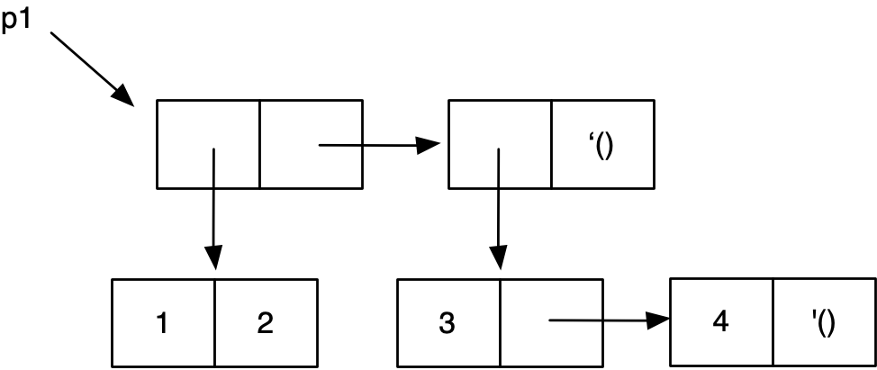
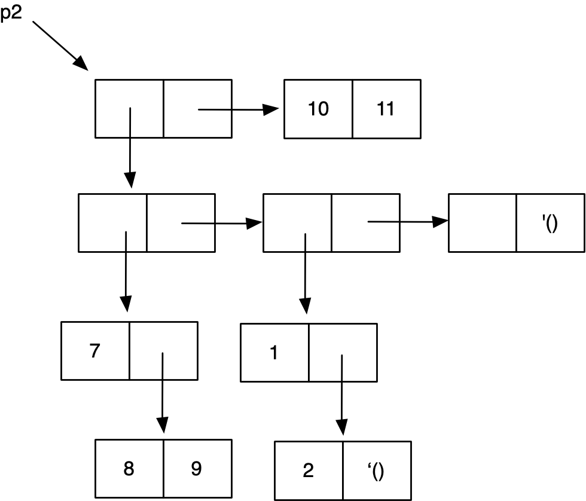

Práctica 2: Programación funcional en Scheme¶
Entrega de la práctica¶
Para entregar la práctica debes subir a Moodle el fichero
practica02.rkt con una cabecera inicial con tu nombre y apellidos, y
las soluciones de cada ejercicio separadas por comentarios. Cada
solución debe incluir:
- La definición de las funciones que resuelven el ejercicio.
- Un conjunto de pruebas que comprueben su funcionamiento
utilizando la librería
schemeunit.
Ejercicios¶
Ejercicio 1¶
Implementa la función recursiva (máximo lista) que recibe una lista
con números como argumento y devuelve el mayor número de la
lista. Suponemos listas de 1 o más elementos.
Para la implementación debes usar la función mayor definida en la
práctica anterior.
Pista: Podemos expresar el caso general de la recursión de la siguiente forma:
El máximo de los elementos de una lista es el mayor entre el primer elemento de la lista y el máximo del resto de la lista.
Ejemplos:
1 2 | (maximo '(9 8 6 4 3)) ; ⇒ 9 (maximo '(1 -1 3 6 4)) ; ⇒ 6 |
Ejercicio 2¶
a) Implementa el predicado recursivo (pertenece? elem lista) que
reciba un dato y una lista y comprueba si el elemento pertenece a
la lista.
1 2 3 | (pertenece? 'a '(b c d e)) ; ⇒ #f (pertenece? 10 '(1 20 10 40 10)) ; ⇒ #t (pertenece? (cons 1 2) (list (cons 2 3) (cons 3 4) (cons 9 0))) ; ⇒ #f |
b) Implementa el predicado recursivo (repetidos? lista) que recibe una lista y
devuelve #t si algún elemento está repetido en la lista, y #f en
caso contrario.
Pista: puedes utilizar la función anterior (pertenece? elem lista), que comprueba si un elemento está en la lista.
1 2 3 | (repetidos? '(1 2 3 5 4 5 6)) ; ⇒ #t (repetidos? '(adios hola que tal)) ; ⇒ #f (repetidos? '(#t #f #t #t #t)) ; ⇒ #t |
Ejercicio 3¶
a) Dado el siguiente box & pointer, escribe las sentencias en Scheme
(usando el mínimo número de llamadas a list y cons) que definen a p1, p2 y p3.

b) Explica si p1, p2 y p3 son listas y cuántos elementos tienen
(en el caso en que lo sean).
c) Escribe las expresiones que:
- devuelve 3 utilizando
p3 - devuelve 5 utilizando
p3
d) Dado el siguiente diagrama caja y puntero, escribe las sentencias en
Scheme (usando llamadas a list y cons) que definen p4.

Ejercicio 4¶
Implementa la función (binario-a-decimal lista-bits) que reciba una lista de bits que representan
un número en binario (el primer elemento será el bit más significativo) y devuelva el número decimal
equivalente.
Pista: puedes utilizar la función length.
1 2 3 | (binario-a-decimal '(1 1 1 1)) ; ⇒ 15 (binario-a-decimal '(1 1 0)) ; ⇒ 6 (binario-a-decimal '(1 0)) ; ⇒ 2 |
Ejercicio 5¶
Implementa la función recursiva (ordenada-creciente? lista-nums)
que recibe como argumento una lista de números y devuelve #t si los
números de la lista están ordenados de forma creciente o #f en
caso contrario. Suponemos listas de 1 o más elementos.
1 2 3 | (ordenada-creciente? '(-1 23 45 59 99)) ; ⇒ #t (ordenada-creciente? '(12 50 -1 293 1000)) ; ⇒ #f (ordenada-creciente? '(3)) ; ⇒ #t |
Ejercicio 6¶
a) Implementa las funciones (inc-izq pareja) y (inc-der pareja)
definidas de la siguiente forma:
(inc-izq pareja): devuelve una nueva pareja con la parte izquierda incrementada en 1.(inc-der pareja): devuelve una nueva pareja con la parte derecha incrementada en 1.
Ejemplos:
1 2 | (inc-izq (cons 10 20)) ; ⇒ {11 . 20}
(inc-der (cons 10 20)) ; ⇒ {10 . 21}
|
b) Implementa la función recursiva (cuenta-impares-pares lista-num)
que devuelva una pareja cuya parte izquierda sea la cantidad de
números impares de la lista y la parte derecha la cantidad de números
pares. Debes utilizar las funciones auxiliares definidas en el
apartado anterior. También puedes utilizar las funciones predefinidas
even? y odd?.
Ejemplos:
1 2 | (cuenta-impares-pares '(3 2 1 4 8 7 6 5)) ; ⇒ {4 . 4} (cuenta-impares-pares '(3 1 5)) ; ⇒ {3 . 0} |
Ejercicio 7¶
Implementa la función recursiva (cadena-mayor lista) que recibe un
lista de cadenas y devuelve una pareja con la cadena de mayor longitud
y dicha longitud. En el caso de que haya más de una cadena con la
máxima longitud, se devolverá la última de ellas que aparezca en la
lista.
En el caso en que la lista sea vacía se devolverá la pareja con la cadena vacía y un 0 (la longitud de la lista vacía).
Pista: puedes utilizar la función string-length
1 2 3 | (cadena-mayor '("vamos" "a" "obtener" "la" "cadena" "mayor")) ; ⇒ {"obtener" . 7} (cadena-mayor '("prueba" "con" "maximo" "igual")) ; ⇒ {"maximo" . 6} (cadena-mayor '()) ; ⇒ {"" . 0} |
Lenguajes y Paradigmas de Programación, curso 2018-19
© Departamento Ciencia de la Computación e Inteligencia Artificial, Universidad de Alicante
Domingo Gallardo, Cristina Pomares, Antonio Botía, Francisco Martínez